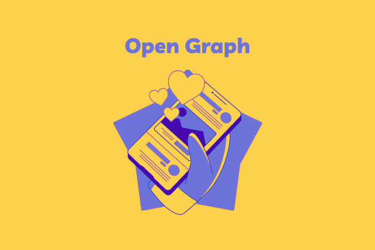

📋 Meta Tags Implementadas
As seguintes meta tags Open Graph estão configuradas nesta página:
og:title - Define o título que aparecerá no compartilhamento
og:description - Define a descrição do conteúdo
og:image - Define a imagem que será exibida (recomendado: 1200x630px)
og:url - Define a URL canônica da página
og:type - Define o tipo de conteúdo (website, article, etc.)
og:locale - Define o idioma do conteúdo
og:site_name - Define o nome do site
👁️ Preview de Compartilhamento
Assim sua página aparecerá quando compartilhada no Facebook, LinkedIn, etc:

Estudo do Protocolo Open Graph
Uma página de exemplo para estudar como o protocolo Open Graph funciona e controla o compartilhamento em redes sociais.
exemplo.com
🔧 Como Testar
1. Facebook Sharing Debugger (OBRIGATÓRIO para WhatsApp):
Acesse developers.facebook.com/tools/debug/
📋 Passo a passo:
- Cole a URL:
https://protocolo-open-graph.vercel.app/ - Clique em "Depurar" ou "Debug"
- Verifique se a imagem aparece no preview
- Se não aparecer, clique em "Raspar Novamente" ou "Scrape Again" (várias vezes se necessário)
- Aguarde 2-3 minutos após limpar o cache
- Só então teste no WhatsApp
⚠️ IMPORTANTE: Se a imagem não aparecer no Facebook Debugger, ela não aparecerá no WhatsApp!
2. LinkedIn Post Inspector:
Acesse linkedin.com/post-inspector/
3. Twitter Card Validator:
Acesse cards-dev.twitter.com/validator
⚠️ Imagem não aparece? Checklist:
- ✅ URL da imagem deve ser absoluta (com https://) - CONFIGURADO
- ✅ Imagem deve estar acessível publicamente - TESTADO E FUNCIONANDO
- ⚠️ CRÍTICO: Limpe o cache no Facebook Sharing Debugger ANTES de testar no WhatsApp
- ✅ Dimensões atuais: 1920x831px - Excelente! Está acima do mínimo recomendado (1200x630px)
- ✅ Tamanho do arquivo: 602KB (dentro do limite de 8MB)
- ✅ Formato: PNG (correto para Open Graph)
- ✅ Proporção: ~2.31:1 (ideal para previews sociais)
- 💡 Dica: O WhatsApp pode levar até 24h para atualizar o cache. Use o Facebook Debugger para forçar atualização!